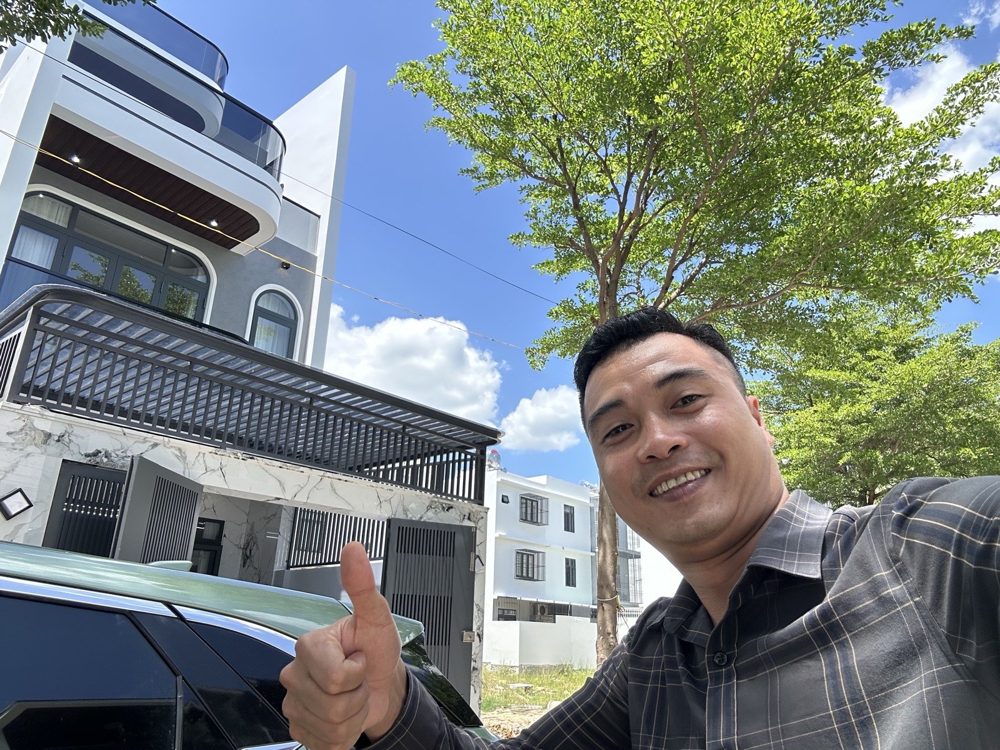
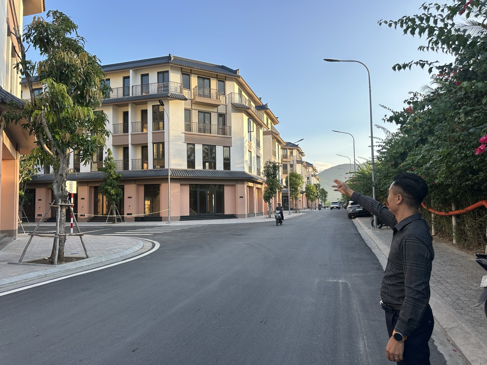

Nhà phố Nha Trang: chọn lô góc hay lô giữa?
Cứ dẫn khách đi xem nhà phố là kiểu gì cũng gặp câu hỏi này: "Lô góc có đắt hơn nhiều không anh? Có đáng không?" Câu trả lời của tôi luôn là: tuỳ anh/chị mua để làm gì — chứ không có lô nào "tốt hơn" tuyệt đối.

Tuần này tôi vừa đi khảo sát thêm mấy căn, đứng nhìn cả dãy phố mới hoàn thiện, càng thấy rõ sự khác biệt. Bài này tôi gỡ ra từng lớp một, để anh/chị tự cân được chứ không nghe theo cảm tính "góc là oai hơn".
Lô góc — hai mặt tiền, nhưng không phải cứ hai mặt là lời
Điểm mạnh thật sự:
- Có hai mặt tiếp giáp đường, ánh sáng và gió tự nhiên vào nhà tốt hơn hẳn nhà kẹp giữa.
- Dễ mở cửa hàng, quán, văn phòng — mặt tiền phụ có thể làm lối vào riêng hoặc bãi đậu xe.
- Về lâu dài, lô góc luôn thanh khoản tốt hơn khi bán lại, vì tệp người mua rộng hơn (cả người ở lẫn người kinh doanh).
Cái giá phải trả đi kèm:
- Giá thường cao hơn lô giữa cùng khu, cùng diện tích — chênh lệch tuỳ vị trí nhưng không hề nhỏ.
- Ồn hơn, vì tiếp xúc với hai luồng xe cộ thay vì một.
- Riêng tư kém hơn — hai mặt đều là mặt tiền nghĩa là hai mặt đều dễ bị nhìn vào.
- Chi phí xây dựng và hoàn thiện mặt ngoài thường cao hơn, vì phải làm đẹp cả hai mặt chứ không phải một.
Lô giữa — bù lại bằng sự yên tĩnh và giá mềm hơn
Điểm mạnh thật sự:
- Giá dễ chịu hơn lô góc, cùng diện tích thì tiết kiệm được một khoản đáng kể.
- Yên tĩnh hơn — chỉ tiếp xúc với một mặt đường, hợp với gia đình có con nhỏ hoặc người lớn tuổi.
- Riêng tư hơn, vì chỉ có một mặt lộ ra ngoài.
Cái giá phải trả đi kèm:
- Chỉ có một mặt tiền — nếu sau này muốn kinh doanh, mở rộng cửa hàng thì bị giới hạn.
- Thanh khoản khi bán lại thường chậm hơn lô góc, vì kén người mua hơn.
- Mặt sau và hai bên hông giáp nhà hàng xóm — muốn cải tạo, mở thêm cửa sổ thì phải xin ý kiến hoặc chịu hạn chế theo quy định xây dựng giáp ranh.
Không có lô nào tốt hơn tuyệt đối. Chỉ có lô hợp hơn với mục đích của người mua.

Ba câu hỏi giúp anh/chị tự quyết, không cần nghe cảm tính
Một, anh/chị mua để ở hay để kinh doanh? Nếu để ở là chính, ưu tiên sự yên tĩnh, thì lô giữa thường là lựa chọn hợp lý hơn — tiết kiệm được tiền chênh lệch mà không đánh đổi gì nhiều. Nếu có ý định mở cửa hàng, cho thuê mặt bằng, thì phần chênh lệch giá của lô góc thường bù lại được bằng khả năng khai thác kinh doanh.
Hai, anh/chị định ở lâu dài hay có thể bán lại trong vài năm tới? Nếu xác định giữ dài hạn để ở, thanh khoản không phải ưu tiên số một. Nếu có khả năng cần bán lại sớm, lô góc là lựa chọn an toàn hơn vì dễ ra hàng hơn nhiều.
Ba, ngân sách của anh/chị co giãn được bao nhiêu? Đây là câu thực tế nhất. Nhiều khách thích lô góc nhưng khi nhìn con số chênh lệch, lại quay về lô giữa vì phần chênh đó dùng để hoàn thiện nội thất còn đáng hơn. Không có gì sai khi chọn lô giữa vì lý do ngân sách — đó là lựa chọn khôn ngoan, không phải lựa chọn kém hơn.
Một điều tôi luôn nhắc khách, dù chọn loại nào
Dù là lô góc hay lô giữa, có một bước tôi không bao giờ bỏ qua khi dẫn khách xem nhà: kiểm tra quy hoạch và pháp lý của chính lô đó và các lô xung quanh. Một lô góc đẹp mà dính quy hoạch mở đường thì đẹp cũng vô nghĩa. Loại lô chỉ là bước chọn thứ hai — pháp lý sạch mới là điều kiện bắt buộc phải có trước.
Nếu anh/chị đang phân vân giữa hai căn cụ thể, cách tốt nhất vẫn là đi xem cả hai vào cùng một khung giờ — buổi sáng và buổi tối, ngày thường và cuối tuần — để cảm nhận thật sự mức độ ồn và ánh sáng, thay vì chỉ nhìn ảnh hay nghe mô tả.
"Rồi, ngày mới tốt lành nhé."
Sống tử tế · Kiếm tiền hạnh phúc · Cho đi giá trị
Đang phân vân giữa một lô góc và một lô giữa?
Gửi tôi hai vị trí anh/chị đang cân nhắc, tôi phân tích giúp theo đúng mục đích sử dụng của anh/chị — không có chuyện lô nào "tốt hơn" cho tất cả mọi người.
Nhắn Zalo — 0869 668 638